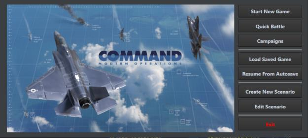
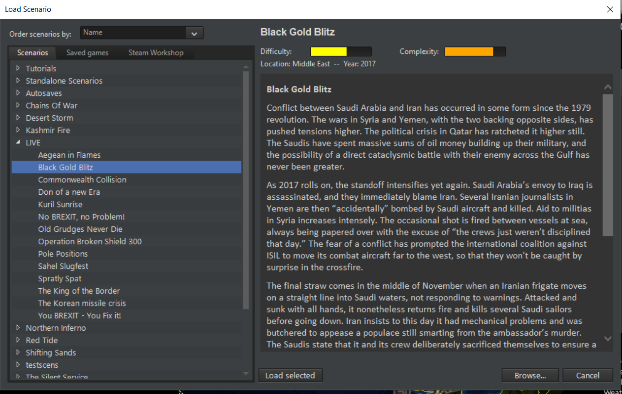

2.0 Introduction to COMMAND¶
FAQ: What is Command: Modern Operations?
Command: Modern Operations (CMO) is a tactical-operational level wargame/simulation of joint all-domain operations, from post-WW2 to the near future.
-
Tactical-operational level: The simulation begins from individual platforms (ships, aircraft, ground vehicles, buildings etc.), each composed of individual components (guns, launchers, sensors, comms & datalinks, powerplants & engines, facilities for aircraft etc.) operating at the tactical level. It scales up to the operational/theater level, where logistics, turn-around cycles, intelligence, force allocation, and mission tasking dominate.
-
Wargame/simulation: Command straddles the line between a traditional wargame and a professional military simulation. Player success depends not on reflexes or "gameplay balance", but on understanding real capabilities, limitations, and operational trade-offs.
-
Joint, all-domain operations: Command demonstrates how land, sea, air, space, strategic and cyber forces work together rather than in isolation. The player synchronizes disparate forces across domains and time to achieve tactical and operational objectives.
-
Post-WW2 to the near future: Command covers military operations from the post-WW2 colonial drawdown and beginning of the 1st Cold War all the way to today's hotspots and the foreseen battlefields of tomorrow.
FAQ: Do I need military experience to play?
Many Command players have military backgrounds, but the game is also played by regular enthusiasts with a fascination for all-domain warfare. The developmental efforts have focused on making the game easy to operate, with a rich variety of tutorial scenarios that help players learn basic concepts of modern warfare as well as the user interface.
Command is not an arcade game with visually stunning explosions. It requires a significant investment of intellectual and temporal capital, and is not for everyone. However, if you really want to understand modern integrated warfare, this is your first choice according to many players.
FAQ: Is Command a true 3D simulation?
Yes. Command is a full 3D simulated environment using a true 3D planet globe. While the default view is top-down 2D, you can raise the camera viewpoint altitude to see the full 3D nature of the simulation. Satellites and all aerospace units are depicted at their correct altitudes with dashed "beanstalks" showing their vertical position.
FAQ: Does Command have multiplayer?
Real-time and WEGO-style multiplayer modes are currently available only in Command-PE (Professional Edition). For CMO there is an unofficial third-party mod which offers PBEM-style multiplayer. Real-time multiplayer for CMO is under development.
FAQ: How does Command compare to games like Dangerous Waters?
Dangerous Waters, Sub Command etc. are more low-level tactical, "levers and buttons" simulations. Command assumes that the AI crew handles many housekeeping tasks (resolving bearing ambiguity of passive sonar, performing TMA, etc.) so you can focus on the tactical picture, much like in Microprose's classic "Red Storm Rising."
Command's scope is that of a grand tactical/operational commander. You manage forces while many tactical functions are handled by the AI, though you can take manual control to plot courses, set speeds/depths and fire weapons. This higher-level modeling allows Command to scale to much greater theaters and unit numbers than practical in "study" sims.
FAQ: Are WW2 scenarios possible?
Yes, with certain limitations. Many WW2 technologies (depth charges, straight-running torpedoes, mines, unguided munitions) are modeled since they also saw use in the Cold War era. Many WW2 platforms are available in the Cold War Database (CWDB, 1946-1979).
However, some WW2-specific elements are not yet modeled: plunging shell fire, "crossing the T" tactics, and diesel subs without snorkels. If these details don't distract you, you can have a lot of fun with WW2 scenarios.
Entering COMMAND, there are four main game modes.
Game Modes:
Campaign. This game mode allows for the playing of multi-mission campaigns, such as the official DLCs or tutorials. See 5.4.3 Campaigns on page 83, for more information.
Quick Battle. This game mode allows for players to throw together a "quick battle" from a list of presets. Thus, you can choose between F-16s and F-22s on one side and Su-35s or MiG-29s on the other for an easy to execute dogfight, or a submarine matchup involving a Los Angeles or Virginia vs. Victor III or Akula.
Start New Game. This loads a prebuilt scenario. This can be considered "normal play". Players can select a side if the scenario allows it, but all ScenEdit features are disabled.
Create New Scenario. This allows for a scenario to be created. All ScenEdit features are enabled.
The gigantic amount of community content for COMMAND and its complexity may be daunting to beginners. Completing the formal tutorials, some new to CMO and some carried over from 1.0, in order is highly recommended. In addition to those, the following "standalone scenarios" are useful for learning the basics of COMMAND.
-
Battle of Chumonchin Chan, 1950. This is a basic Korean War scenario where the player controls an objectively superior force to their opponent. Useful for learning gun-dominant surface warfare.
-
Wooden Leg, 1985. This is another basic long-range Israeli airstrike scenario where the only challenge is aerial refueling to get the aircraft to the target. Useful for learning how to use tanker aircraft.
-
Raid on Kismayo, 2013. This is a basic low-intensity modern warfare scenario. Useful for general play and control in a generally low-risk environment.
-
Battle of Latakia, 1973. This is a historically lopsided encounter that serves as an excellent introduction to missile-age surface warfare. Useful for learning missile-dominant surface warfare.
-
Stand Up, 2011. This is, especially if played from the British side, an easy scenario that nonetheless forces the player to coordinate aircraft and ships. Useful for getting the hang of combined arms operations.
Once the basics have been mastered, the following are recommended for somewhat more advanced play:
-
North Pacific Shootout, 1989. A small-scale air-to-air scenario between the best the US and Soviet Union have to offer. Useful for fighting a peer air opponent in a manageable situation.
-
Iron Hand, 2014. A Russia-vs-Azerbaijan scenario that teaches the basics of standoff weapons, a detailed air campaign, and operating in a casualty-conscious environment.
The community pack, available at https://command.matrixgames.com/?page_id=1876, contains hundreds of scenarios available for download. Many are beginner-friendly. A helpful rule of thumb is to search for ones with low 'complexity' on the difficulty-complexity scale.
Disclaimer: The community pack scenario authors have varying degrees of contactability and support of their scenarios. Thus, some scenarios may not be updated or changed to take mechanics changes since their introduction into account. Play at your own risk.
2.1 Important Terms¶
There are several bits of information those in a hurry to get started need to know. These will be elaborated in greater detail throughout this manual and the tutorials.
Units (Page 56): Units are the entities in the simulation. There are many types of units and many of these units can house other units; for example, an aircraft carrier can house aircraft, or an airbase can have hanger units, runway units, and these hanger units may contain aircraft units. Many units can be directly controlled or assigned to missions. There are special units such as individual facilities, sonobuoys, missiles, and many weapon types that may or may not be directly controlled and cannot be assigned a mission. Airbases can be assigned missions.
Groups (Page 56): Groups are units that have been bound/grouped together in the simulation into one cohesive unit. This is done by drag-selecting units and pressing the G key. Many scenarios come with groups pre-made by the scenario creator, and aerial missions automatically group aircraft based on the mission editor's flight size.
Mounts (Page 36): Many units have mounts. These are usually weapons or sensors. An example would be a gun mount on a ship, a hard point on an aircraft, or a sonobuoy dispenser on an anti-submarine warfare (ASW) helicopter. Mounts usually require ammunition that is already loaded, such as a missile on an aircraft (single shot mount) or a gun mount with a magazine associated with it for reload. There are ways to reload mounts and magazines if the scenario designer desires to provide loaded ammunition bunkers, ships' magazines for aircraft or at-sea replenishment for ships.
Magazines (Page 30): These are components of units that are used to store weapons. These must have weapons in them for weapons to fire or aircraft to launch combat-oriented missions.
Missions (Page 144): Missions make the battle space manageable and allows the scenario designer to set up an effective AI controlled opponent. The purpose of missions is to allow units or groups of units to engage in a common task, such as anti-submarine warfare or all striking one target. There are many mission types and mission options, such as Rules of Engagement, Doctrine and Postures.
Formations (Page 29): Formations are a group of units (normally associated with ships, but may be extended to aircraft formations), a central unit(s) and escorts. Each unit in the formation usually has a primary task and station, designed to mutually support the whole formation from any threat.
Rules of engagement (RoE) and Doctrine (Page 38 and 61): This also encompasses mission options and orders. Many units house other units, like a cruiser with an embarked ASW helicopter. The cruiser is assigned a mission or patrol zone within a formation which has a specific EMCON (Emissions Condition, i.e. whether its radar is on or off). If the embarked helicopter is not assigned a specific mission, it will inherit the Rules of Engagement, Doctrine and EMCON of the parent unit (the cruiser), this can be overridden if you decide to change any of the aforementioned settings (you will be prompted to affirm the override).
You can skip right to the tutorials or read further for more detailed information on the items above.
Events (Page 93): Events allow fundamental changes in the battlespace, such as changing the player's score, launching or cancelling a mission, or even ending the scenario entirely. Events consist of a trigger (cue to start them, which can be a point threshold, unit hit/found, or time point) and an action (the meat of the event itself, which can be everything from a basic "Side ___ scores X number of points" to a complex Lua script). Events are created by the scenario author in the scenario editor and are not viewable or editable in regular play.
Sensors (page 195): Sensors are anything that allows a unit to detect something else. They range from the classic "Mark 1 Eyeball" to advanced radars and electronic emission detectors. Sensors can be passive (no emissions of their own) or active (which do emit, and thus can be detected by other passive sensors)
Types of sensors include:
-
Radar. The most famous 'active' sensor system. Radars range from the earliest and crudest World War II vintage types to ultra-modern AESAs (Active Electronically Scanned Arrays). Radar performance, especially in the face of jammers, can thus vary extensively based on power and technology. On one extreme are early radars that can only generate an imprecise general contact location, while on the other are advanced ones that are incredibly jamming resistant and can determine the exact type of target they're identifying.
-
Sonar. Sound-based naval detection system, sonar can be 'passive' (purely listening) or active (pinging). Active sonar is more precise but lets the target know that someone else is there. As with radars, sonar performance varies extensively by size and technology.
-
Electro-Optical. This includes video cameras and infrared sensors. While they have their limitations (such as only being able to determine precise distances at short range), they have the advantage of being 'passive' and thus not emitting like radars are.
-
ESM. Electronic Support Measures, these range from simple radar detectors to advanced signals processors. All share the characteristics of being 'passive' (not emitting themselves) and being able to detect active radar emissions.
2.2 Fundamentals¶
2.2.1 Starting COMMAND¶
Start command by either clicking on the Desktop Shortcut or on the Command.EXE file in the Command folder. The screen below is shown.

On the top is the "play game" subsection.
"QUICK BATTLE" opens a series of customizable engagements where the player selects the forces from a group of presets and proceeds to engage them in a small scenario.
To create a quick battle involves templates. They are accessible in the [COMMAND installation folder]/QuickBattle folder. Each quick battle gets its own subfolder, featuring an HTML document and a Lua script to match.
In the background, the named elements in the HTML page are translated to Lua variables which are then executed via the attached script. Thus, like scenarios, the templates can be customized and shared by editing the template portions.
"CAMPAIGNS" opens a list of current campaigns. (See 5.4.3 Campaigns on page 83)
"START NEW GAME" and "LOAD SAVED GAME" places the simulation in play mode and opens a menu with two tabs on the left and a file menu below them. The "START NEW SCENARIO" tab shows scenario files and allows starting the selected scenario from the beginning and the "LOAD SAVED GAME" tab shows saved game files and allows loading those saved games. Selecting a scenario or saved game will show the title and a brief description of the scenario.
RESUME FROM AUTOSAVE loads the last autosave.
On the bottom is the "Scenario editor" subsection.
The "CREATE NEW SCENARIO" places the simulation in the edit mode and starts the simulation is a blank mode.
The "EDIT SCENARIO" places the simulation in the edit mode and allows loading a scenario or saved game.

The load scenario dialog is composed of list of scenarios or saved games on the left (with a third section on the rightmost side of that reserved for scenarios accessed via the Steam Workshop) and a large text box with name and description on the right. The left scenario drill-down list is tabbed and allows you to view and choose scenario folders, files (scenarioname.scen) or save games (scenarioname.sav files).
To load a scenario or save game you must select one by point and clicking it from the left side menu. If the entry has a plus sign next to it is a folder which when clicked will open revealing individual scenario or save game files that can be individually selected. When satisfied, click the load selected button at the bottom and the scenario or save will load.
When you load a scenario in either mode the application will match the scenario with the necessary database version. When you edit a scenario, it will start with your default database version. If you need to change this, you can do so in the scenario editor. This will be described later in the manual.
You will now be presented with the side selection and briefing dialog.

Select a side in the drop-down menu at the top, read the briefing and click the "enter scenario" button when satisfied with your choice. Many scenarios do not have this option. In this case, simply read the briefing if desired and press "enter scenario".
The scenario will now launch, along with the features and settings graphic that determines what specific options are enabled or disabled. Some scenarios may have unlimited magazines at air and naval bases, while others may not.
In normal play, scenario features and settings are locked. See 5.4.9 Scenario Features + Settings on page 92 for information on how to change them in the editor.